2–3 ноября 2026 · автономная ночная сессия «3D-MVP»
Матч переехал на 3D-лесную арену:
3D-башни, 3D-юниты, стеклянный интерфейс
Настоящий матч теперь идёт на склоне горы из Blender: мобы шагают по серпантину вверх, башни стоят на террасах своих клеток, закрытые места спрятаны в тумане. Симуляция не тронута — 3D только читает состояние поля.
🌲 Арена в матчеЛесная арена в SubViewport под 2D-слоем эффектов. Высоты террас и дороги выгружены из Blender в arena_layout.json.
🏰 3 модели башенПост → каменная башня → резная башня с кристаллом. 7 богов — перекраска. Уровень слияния — золотые кольца.
🚶 5 силуэтов юнитовПеший, тяжёлый, нетопырь, босс, колобок. Темп шага — от настоящей скорости моба.
✅ Проверки314/314тестов GUT, полная проверка зелёная перед каждым коммитом. FPS (две арены, 2560×1440): 87–90 в начале волны, 65–68 при 150 мобах на каждом поле.
Было → стало
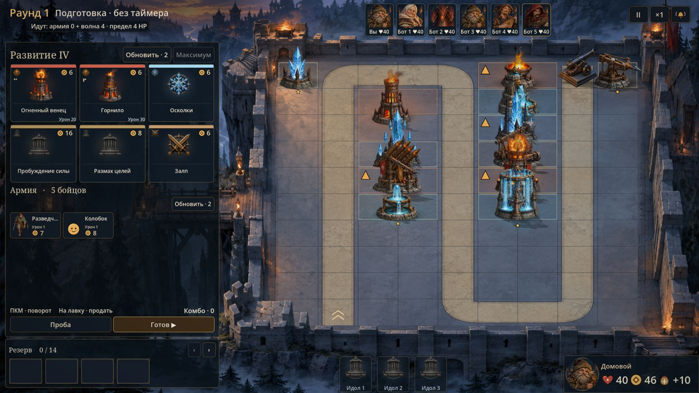
Было: 2.5D-двор, подготовка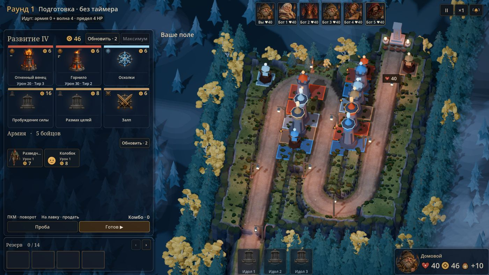
Стало: 3D-арена, лес за стеклянной лавкой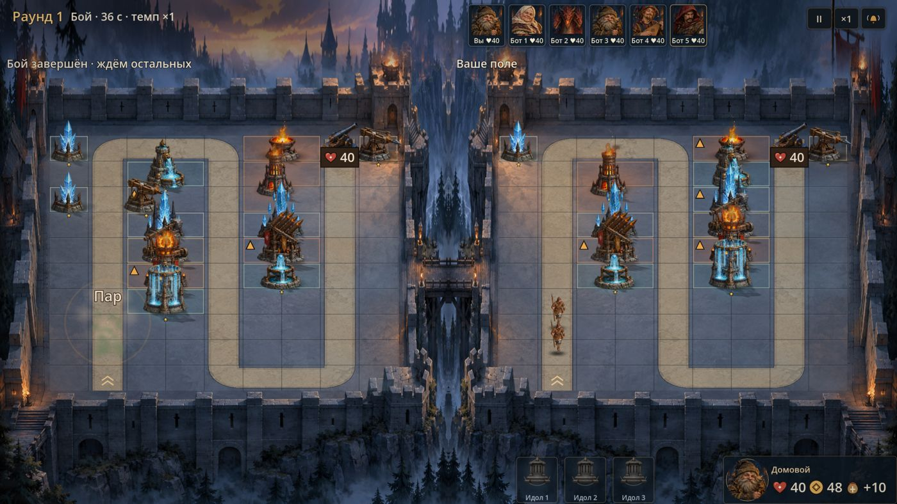
Было: бой на двух каменных дворах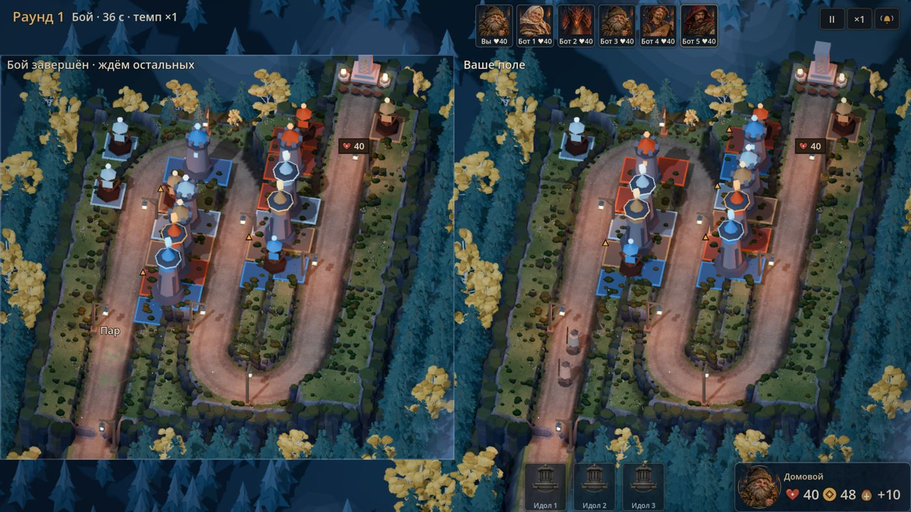
Стало: бой — две арены, соперник в «окне» слева1 · Лесная 3D-арена в матче
- Как устроено.
ArenaStage3D — SubViewport с forest_arena.glb, светом и туманом превью и ортокамерой, которая сама кадрирует поле под свой прямоугольник экрана. Своё поле в подготовке рисуется во весь экран (поле справа, слева сквозь лавку виден лес). В бою поле соперника — своя сцена в левой половине.
- Высоты. В
build_forest_arena_v2.py добавлена запись arena_layout.json (модуль arena_layout.py): высота каждой из 56 террас и 203 точки линии дороги через 0.25 м с длиной вдоль пути. Сгенерировано в Blender без пересборки сцены.
- Мобы. Прогресс из симуляции → длина вдоль гладкой линии дороги (центры клеток пути сопоставлены с ближайшими точками линии, только вперёд — развороты не путают) → точка с высотой дороги. Плавно между тиками, поворот по ходу, лёгкий разброс поперёк дороги, чтобы толпа не сливалась.
- Ввод. Клетка под курсором — луч против плоскостей террас, берётся ближайшее попадание (без физики). Проверка: центры всех 90 клеток определяются верно; расхождения только в 6 угловых точках, где клетку перекрывает более высокий сосед.
- Рост пути. Закрытые террасы — тёмный туман с рамкой «места», неоткрытая дорога — тёмная полоса, конец открытой дороги — деревянный завал.
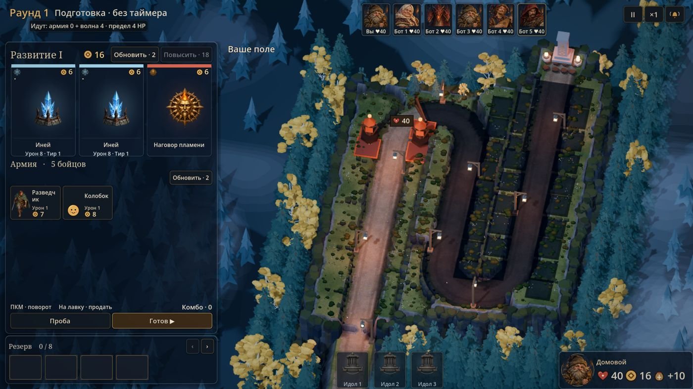
Раунд 1: открыто 10 клеток пути, остальное в тумане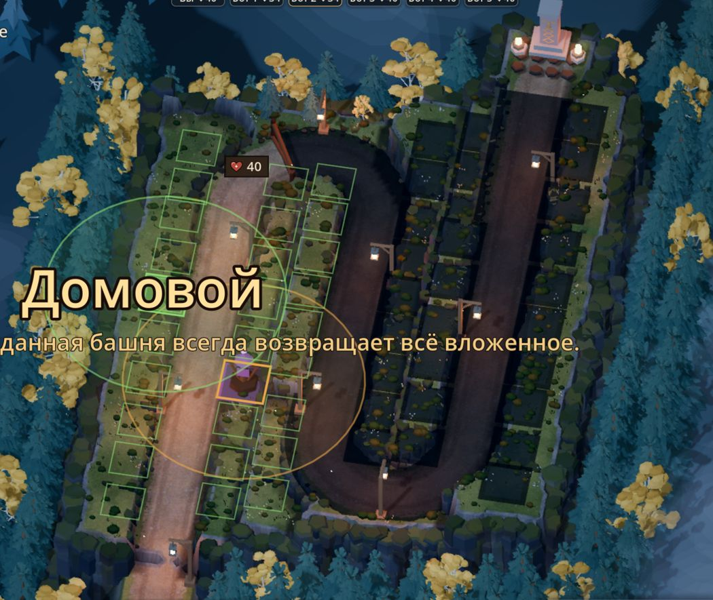
Перетаскивание: рамки всех свободных мест, выбранная башня с радиусом2 · Интерфейс глазами игрока — 4 круга
- «Хватает ли золота?» Золото было только в углу у героя. → Монета и сумма в шапке лавки; цена на карточке становится красной, если не хватает, карточка заметно темнеет; цены крупнее (17 px), «Урон · Тир» 10→12 px. Панели лавки, резерва и героя — «стекло»: тёмно-синие полупрозрачные, светлая кромка, тень (
DuskTheme.glass()). Первая попытка сломала шапку (золото переносилось по буквам) — исправлено.
- «Куда ставить?» На 3D-поле открытые и закрытые места видны, но при перетаскивании не было понятно, куда можно. → Пока тащим постройку, все свободные открытые места обведены зелёной рамкой; фигура и радиус — на высоте террасы.
- «Что сейчас происходит в бою?» Юниты были мелкие и бурые на буром — почти не видны; у окна соперника был жёсткий шов. → Юниты крупнее (×1.9) и светлее, тень-подложка; окно соперника обрамлено стеклянной кромкой.
- Полировка моделей. Кристаллы выгорали в белый — цвет бога терялся; кольца уровня вылезали за плитку; босс великоват. → Мягче свечение, аккуратные кольца, босс ниже, плитки ближе к камню.
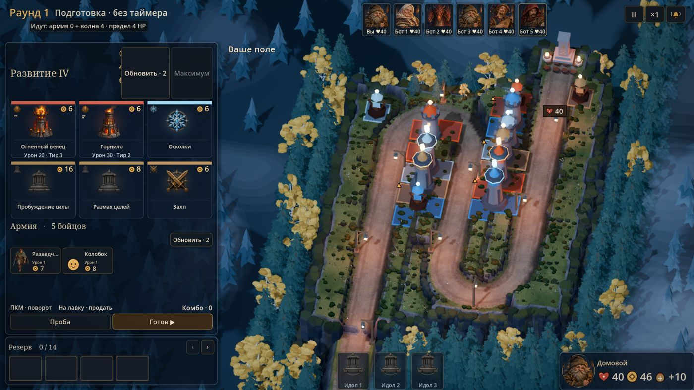
Круг 1 до исправления: шапка лавки сломанаПосле круга 1: золото в шапке, стеклянные панели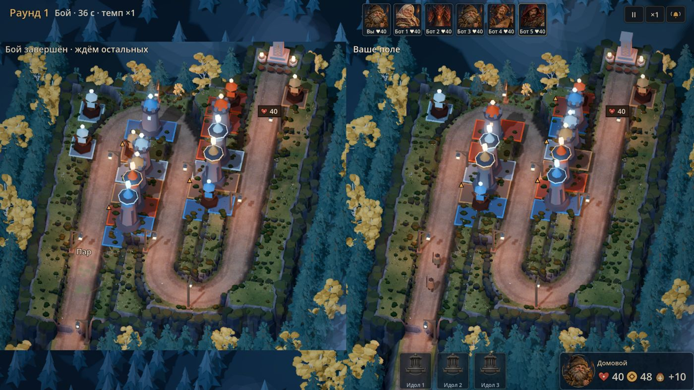
Круг 3 до: юниты почти не видны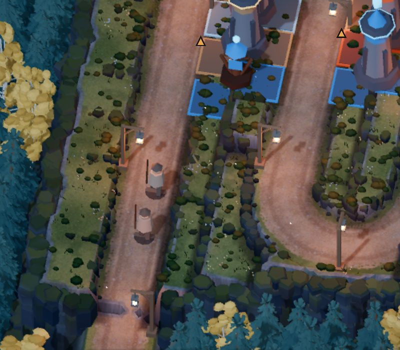
После: юниты на серпантине читаются3 · 3D-башни и 4 · 3D-юниты
Модели собраны в коде из примитивов Godot (ArenaTower3D, ArenaUnit3D, общие материалы — ArenaMaterials3D). Все цвета, высоты и размеры — в data/visuals/arena_3d_style.tres: бог → цвет и свечение, моб → модель, цвет, рост.
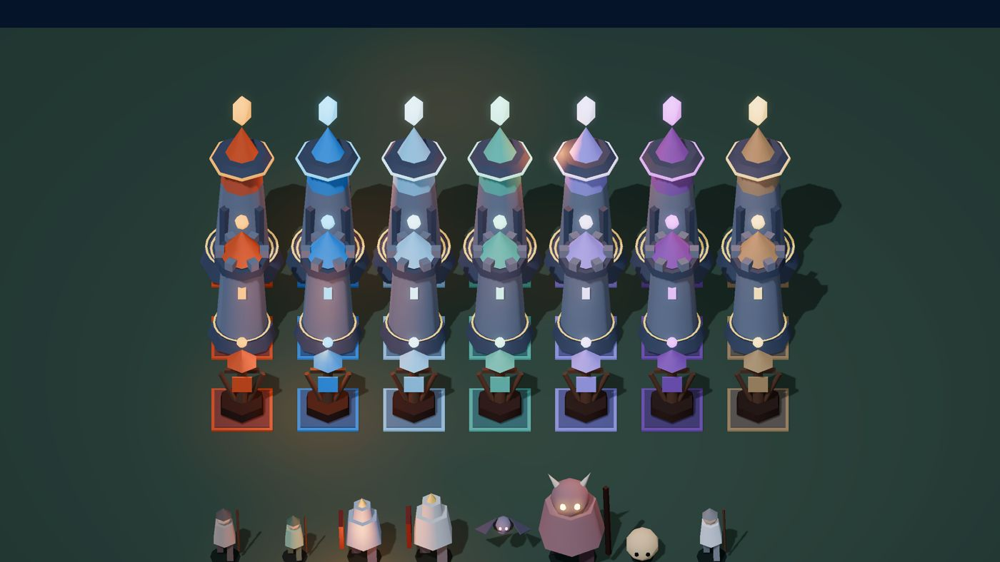
7 богов × 3 тира (снизу вверх: пост, каменная, резная) и юниты: пеший, быстрый, тяжёлые, нетопырь, босс, колобок, лекарь
- Под каждой клеткой фигуры — плитка цвета бога: форма «рюкзака» видна сразу.
- Выстрел — модель вздрагивает; покупка/слияние — вырастает из земли.
- Конец короткого пути — деревянный тотем героя с огнём и завал; скрытные мобы полупрозрачны, при ярости под юнитами красное кольцо.
- Юниты: шаг и покачивание в темпе реальной скорости (замедление — медленнее шаг), нетопырь машет крыльями над дорогой, колобок катится. Смерть — вспышка и исчезновение. HP — полоска над головой, статусы — кольца вокруг тела.
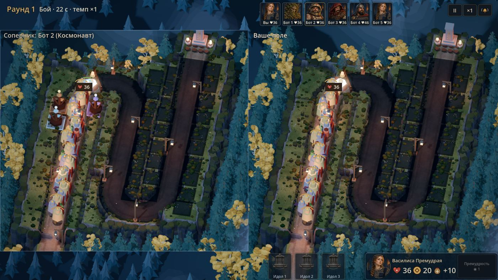
Нагрузочный замер: по 150 мобов на каждом поле — 65–68 FPSВторой заход (утро 3 ноября) — по замечаниям автора
«Ячейки неровные, панель справа кривая, в лавке огромные значки без информации, выглядит как 2006». Что сделано:
- Ровные места. Террасы соседних колонок отличались на 1–2 м — фигура на 2 клетки стояла криво. Теперь каждая полоса мест между дорогами — одна ровная каменная площадка из плит 2×2 м с основанием до склона. Сетка «рюкзака» читается сразу.
- Современный рендер. Проект переведён на Forward+ (Vulkan): затенение в углах (SSAO/SSIL), мягкие тени, процедурная фактура и рельеф камня у плит и башен. Заодно быстрее: 111 FPS в начале волны, 74 при 150 мобах на каждом поле.
- Карточки лавки как в концепте. Бейдж тира I/II/III (бронза/серебро/золото), символ стихии, картинка меньше, внизу плашка: крупная цена (красная при нехватке), урон со значком меча и форма фигуры. Подсказка: стихия, описание, урон, радиус, скорострельность, площадь.
- Карточки армии — в том же стиле: портрет, имя, плашка с ценой и уроном. Тост итога боя — стеклянный, над нижним рядом.
- Тёплый свет. По углам каждой площадки — каменные жаровни с огнём и светом (FPS при нагрузке 69–76).
- Ровный интерфейс. Нижний ряд — стеклянный блок «Идолы» и карточка героя одной высоты с ровными отступами; армия: заголовок и реролл одной строкой; лавка по содержимому без пустой дыры; раунд/фаза и «Ваше поле» — на стеклянных плашках.
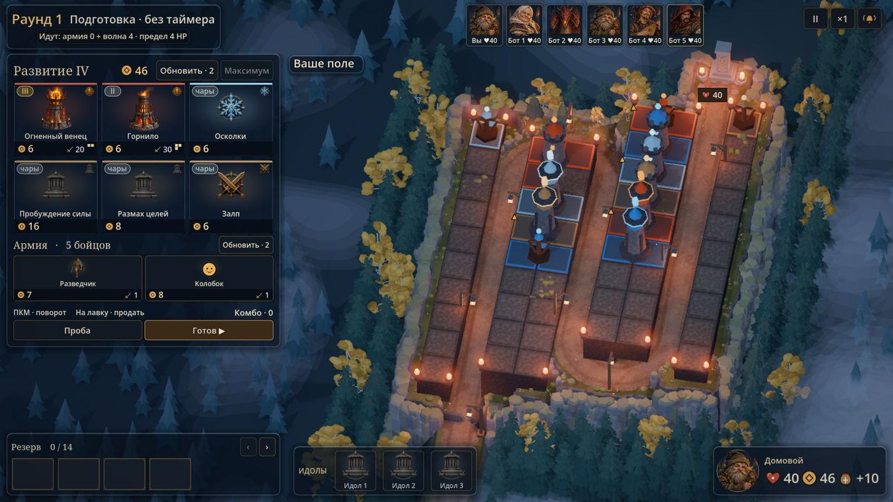
Подготовка: ровные площадки, новые карточки, нижний ряд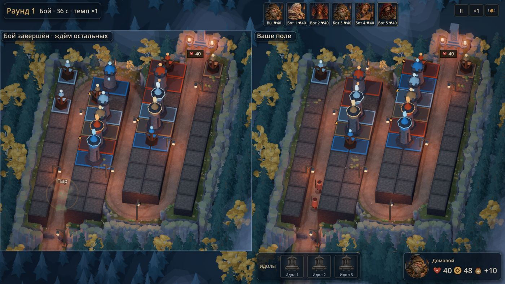
Бой на Forward+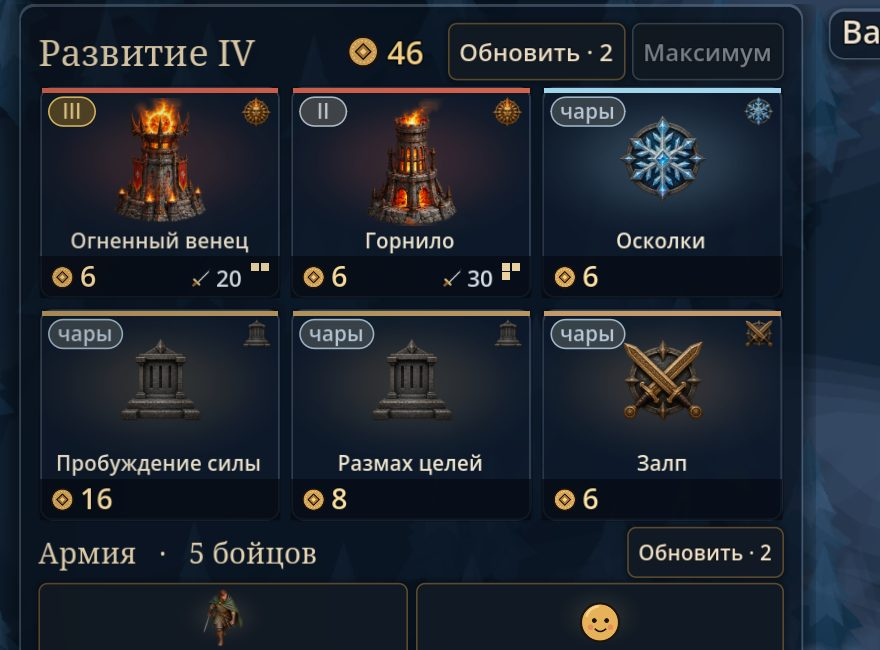
Лавка: тир, стихия, цена, урон, форма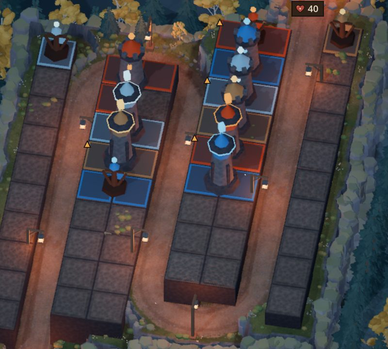
Площадки с фактурой камня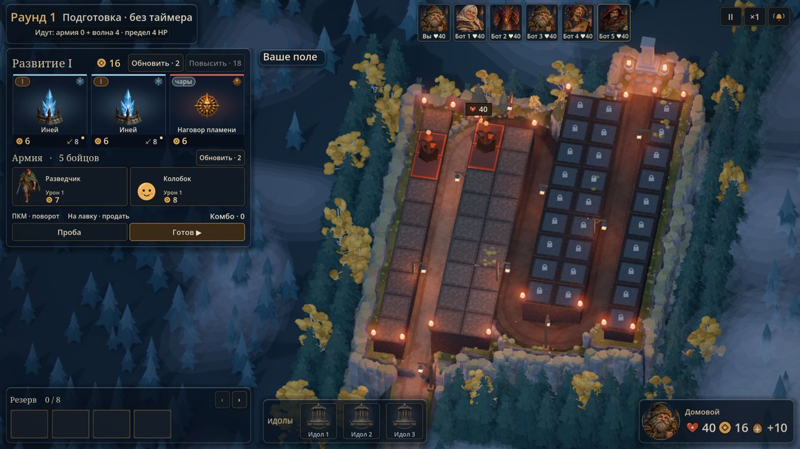
Раунд 1: закрытые места в тумане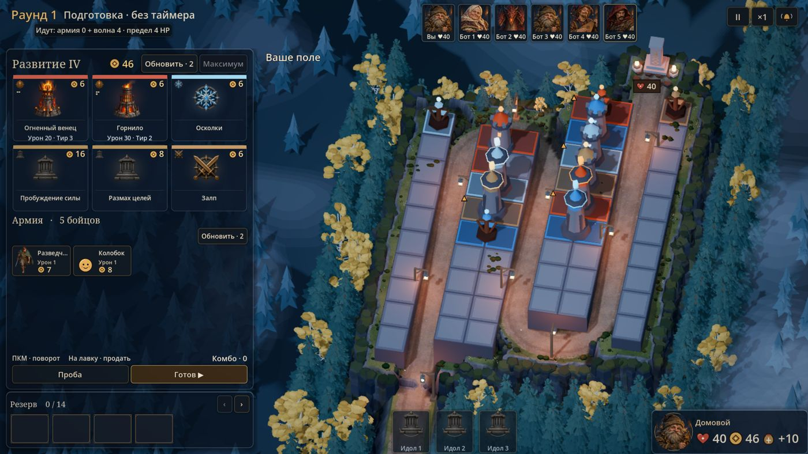
Первый вариант площадок (до фактуры)Решения (проверить утром)
- Модели — из примитивов Godot, а не Blender GLB. Быстрее, перекраска без импорта. Если нужен «рукотворный» вид — заменить на GLB с теми же окрашиваемыми частями.
- Поле подготовки во весь экран — лес за лавкой; в бою соперник — отдельное окно.
- Удалён мёртвый код: 2.5D-«двор подготовки» (
PreparationCourt) и старый неиспользуемый Arena3D со сценами. Старые 2D-рисовальщики остались — ими пользуются песочница и лаборатория реакций.
Не успел / известные проблемы
- Статусы мобов (замедление, горение, мокрота, заряд, проклятие) — 2D-кольца поверх модели, без 3D-эффектов.
- Снаряды и попадания — плоские 2D-эффекты поверх сцены. Вылет из навершия 3D-башни сделан в конце сессии, глазами в кадре не пойман.
- Настоящее перетаскивание мышью не проверено (курсор автора не трогал) — проверено прямыми вызовами наведения.
- FPS при 150 мобах на каждом поле — 65–68 (было 52–65; помогло отключение лунных теней у деталей юнитов). Пробовал рисовать общую сцену в бою только на свою половину — +3 FPS, но пустые полосы слева; откатил.
- Цвета юнитов после осветления пастельные; кольцо цвета игрока у армии в 3D не проверено глазами.
Что проверить утром
- Запустить матч (F5): поставить башню перетаскиванием, повернуть ПКМ, продать сбросом на лавку — совпадает ли подсветка с террасой под курсором.
- Посмотреть бой целиком на ×1 и ×2: читаются ли юниты и HP, нравится ли темп шага.
- Оценить модели башен: оставить примитивы или делать в Blender.
- Поднять магазин до IV: туман и завал исчезают, дорога открывается до идола.